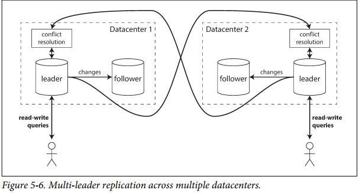

5. Replication
Reasons why you might want to replicate data:
- To keep data geographically close to your users
- Increase availability
- Increase read throughput
The difficulty in replication lies in handling changes to replicated data. Popular algorithms for replicating changes between nodes: single-leader, multi-leader, and leaderless replication.
Leaders and followers
Each node that stores a copy of the database is called a replica.
Every write to the database needs to be processed by every replica. The most common solution for this is called leader-based replication (active/passive or master-slave replication).
- One of the replicas is designated the leader (master or primary). Writes to the database must send requests to the leader.
- Other replicas are known as followers (read replicas, slaves, secondaries or hot stanbys). The leader sends the data change to all of its followers as part of a replication log or change stream.
- Reads can be query the leader or any of the followers, while writes are only accepted on the leader.
MySQL, Oracle Data Guard, SQL Server's AlwaysOn Availability Groups, MongoDB, RethinkDB, Espresso, Kafka and RabbitMQ are examples of these kind of databases.
Synchronous vs asynchronous
The advantage of synchronous replication is that the follower is guaranteed to have an up-to-date copy of the data that is consistent with the leader. The disadvantage is that it the synchronous follower doesn't respond, the write cannot be processed.
It's impractical for all followers to be synchronous. If you enable synchronous replication on a database, it usually means that one of the followers is synchronous, and the others are asynchronous. This guarantees up-to-date copy of the data on at least two nodes (this is sometimes called semi-synchronous).
Often, leader-based replication is asynchronous. Writes are not guaranteed to be durable, the main advantage of this approach is that the leader can continue processing writes.
Setting up new followers
Copying data files from one node to another is typically not sufficient.
Setting up a follower can usually be done without downtime. The process looks like:
- Take a snapshot of the leader's database
- Copy the snapshot to the follower node
- Follower requests data changes that have happened since the snapshot was taken
- Once follower processed the backlog of data changes since snapshot, it has caught up.
Handling node outages
How does high availability work with leader-based replication?
Follower failure: catchup recovery
On its local disk, each follower keeps a log of the data changes it has received from the leader. If a follower crashes and is restarted, or if the network between the leader and the follower is temporarily interrupted, the follower can recover quite easily: from its log, it knows the last transaction that was processed before the fault occur red. Thus, the follower can connect to the leader and request all the data changes that occurred during the time when the follower was disconnected. When it has applied these changes, it has caught up to the leader and can continue receiving a stream of data changes as before.
Leader failure: failover
- Failover
- One of the followers needs to be promoted to be the new leader, clients need to be reconfigured to send their writes to the new leader and followers need to start consuming data changes from the new leader.
Automatic failover consists:
- Determining that the leader has failed. If a node does not respond in a period of time it's considered dead.
- Choosing a new leader. The best candidate for leadership is usually the replica with the most up-to-date changes from the old leader.
- Reconfiguring the system to use the new leader. The system needs to ensure that the old leader becomes a follower and recognises the new leader.
Things that could go wrong:
- If asynchronous replication is used, the new leader may have received conflicting writes in the meantime.
- Discarding writes is especially dangerous if other storage systems outside of the database need to be coordinated with the database contents.
- It could happen that two nodes both believe that they are the leader (split brain). Data is likely to be lost or corrupted.
- What is the right time before the leader is declared dead? A longer timeout means a longer time to recovery in the case where the leader fails. However, if the timeout is too short, there could be unnecessary failovers.
For these reasons, some operation teams prefer to perform failovers manually, even if the software supports automatic failover.
Implementation of replication logs
Statement-based replication
The leader logs every statement and sends it to its followers (every INSERT, UPDATE or DELETE).
This type of replication has some problems:
- Non-deterministic functions such as
NOW()orRAND()will generate different values on replicas. - Statements that depend on existing data, like auto-increments, must be executed in the same order in each replica.
- Statements with side effects may result on different results on each replica.
A solution to this is to replace any nondeterministic function with a fixed return value in the leader. However, because there are so many edge cases, other replication methods are now generally preferred.
Write-ahead log (WAL) shipping
The log is an append-only sequence of bytes containing all writes to the database. The leader can send it to its followers. This way of replication is used in PostgresSQL and Oracle.
The main disadvantage is that the log describes the data at a very low level (like which bytes were changed in which disk blocks), coupling it to the storage engine.
Usually is not possible to run different versions of the database in leaders and followers. This can have a big operational impact, like making it impossible to have a zero-downtime upgrade of the database.
Logical (row-based) log replication
Basically a sequence of records describing writes to database tables at the granularity of a row:
- For an inserted row, the new values of all columns.
- For a deleted row, the information that uniquely identifies that column.
- For an updated row, the information to uniquely identify that row and all the new values of the columns.
A transaction that modifies several rows, generates several of such logs, followed by a record indicating that the transaction was committed. MySQL binlog uses this approach.
Since logical log is decoupled from the storage engine internals, it's easier to make it backwards compatible.
Logical logs are also easier for external applications to parse, useful for data warehouses, custom indexes and caches (change data capture).
Trigger-based replication
There are some situations were you may need to move replication up to the application layer.
A trigger lets you register custom application code that is automatically executed when a data change occurs. This is a good opportunity to log this change into a separate table, from which it can be read by an external process.
Main disadvantages is that this approach has greater overheads, is more prone to bugs but it may be useful due to its flexibility.
Problems with Replication Lag
Being able to tolerate node failures is just one reason for wanting replication. As mentioned in the introduction to Part II, other reasons are scalability (processing more requests than a single machine can handle) and latency (placing replicas geographically closer to users)
In a read-scaling architecture, you can increase the capacity for serving read-only requests simply by adding more followers. However, this only realistically works on asynchronous replication. The more nodes you have, the likelier is that one will be down, so a fully synchronous configuration would be unreliable.
With an asynchronous approach, a follower may fall behind, leading to inconsistencies in the database (eventual consistency). The replication lag could be a fraction of a second or several seconds or even minutes.
The problems that may arise and how to solve them.
Reading your own writes
- Read-after-write consistency
- also known as read-your-writes consistency is a guarantee that if the user reloads the page, they will always see any updates they submitted themselves.
How to implement it:
- When reading something that the user may have modified, read it from the leader. For example, user profile information on a social network is normally only editable by the owner. A simple rule is always read the user's own profile from the leader.
- If most things in the application are potentially editable by the user, that approach wont be effective, as most things would have to be read from the leader (negating the benefit of read scaling). In that case, other criteria may be used to decide whether to read from the leader. You could track the time of the latest update and, for one minute after the last update, make all reads from the leader.
- The client can remember the timestamp of the most recent write, then the system can ensure that the replica serving any reads for that user reflects updates at least until that timestamp.
- If your replicas are distributed across multiple datacenters, then any request needs to be routed to the datacenter that contains the leader.
Another complication is that the same user is accessing your service from multiple devices, you may want to provide cross-device read-after-write consistency.
Some additional issues to consider:
- Remembering the timestamp of the user's last update becomes more difficult because the code running on one device doesnt know what updates have happened on the other device. . The metadata will need to be centralised.
- If replicas are distributed across datacenters, there is no guarantee that connections from different devices will be routed to the same datacenter. You may need to route requests from all of a user's devices to the same datacenter.
See Facebooks memcached implementation for how they implement this with a cache layer aswell.
Monotonic reads
Because of followers falling behind, it's possible for a user to see things moving backward in time.
When you read data, you may see an old value; monotonic reads only means that if one user makes several reads in sequence, they will not see time go backward. Its a lesser guarantee than strong consistency, but a stronger guarantee than eventual consistency.
Make sure that each user always makes their reads from the same replica. The replica can be chosen based on a hash of the user ID. If the replica fails, the user's queries will need to be rerouted to another replica.
Consistent prefix reads
1 2 3 4 | |
Someone shouldn't see Mrs. Cake's message first. Preventing this kind of anomaly requires another type of guarantee: consistent prefix reads. This guarantee says that if a sequence of writes happens in a certain order, then anyone reading those writes will see them appear in the same order.
If the database always applies writes in the same order, reads always see a consistent prefix, so this anomaly cannot happen. However, in many distributed databases, different partitions operate independently, so there is no global ordering of writes: when a user reads from the database, they may see some parts of the database in an older state and some in a newer state.
One solution is to make sure that any writes that are causally related to each other are written to the same partitionbut in some applications that cannot be done efficiently. There are also algorithms that explicitly keep track of causal dependencies, a topic that we will return to in The happens-before relationship and concurrency.
Multi-leader replication
Leader-based replication has one major downside: there is only one leader, and all writes must go through it.
A natural extension is to allow more than one node to accept writes (multi-leader, master-master or active/active replication) where each leader simultaneously acts as a follower to the other leaders.
Use cases for multi-leader replication
It rarely makes sense to use multi-leader setup within a single datacenter.
Multi-datacenter operation
You can have a leader in each datacenter. Within each datacenter, regular leader-follower replication is used. Between datacenters, each datacenter leader replicates its changes to the leaders in other datacenters.

Compared to a single-leader replication model deployed in multi-datacenters
- Performance
- With single-leader, every write must go across the internet to wherever the leader is, adding significant latency. In multi-leader every write is processed in the local datacenter and replicated asynchronously to other datacenters. The network delay is hidden from users and perceived performance may be better.
- Tolerance of datacenter outages
- In single-leader if the datacenter with the leader fails, failover can promote a follower in another datacenter. In multi-leader, each datacenter can continue operating independently from others.
- Tolerance of network problems
- Traffic between datacenters usually goes over the public internet, which may be less reliable than the local network within a datacenter. Single-leader is very sensitive to problems in this inter-datacenter link as writes are made synchronously over this link. Multi-leader with asynchronous replication can tolerate network problems better.
Multi-leader replication is implemented with Tungsten Replicator for MySQL, BDR for PostgreSQL or GoldenGate for Oracle.
Although multi-leader replication has advantages, it also has a big downside: the same data may be concurrently modified in two different datacenters, and those write conflicts must be resolved (indicated as conflict resolution in Figure 5-6).
Traffic between datacenters usually goes over the public internet, which may be less reliable than the local network within a datacenter It's common to fall on subtle configuration pitfalls. Autoincrementing keys, triggers and integrity constraints can be problematic. Multi-leader replication is often considered dangerous territory and avoided if possible.
Clients with offline operation
If you have an application that needs to continue to work while it is disconnected from the internet, every device that has a local database can act as a leader, and there will be some asynchronous multi-leader replication process (imagine, a Calendar application).
CouchDB is designed for this mode of operation.
Collaborative editing
Real-time collaborative editing applications allow several people to edit a document simultaneously. Like Etherpad or Google Docs.
The user edits a document, the changes are instantly applied to their local replica and asynchronously replicated to the server and any other user.
If you want to avoid editing conflicts, you must the lock the document before a user can edit it. For faster collaboration, you may want to make the unit of change very small (like a keystroke) and avoid locking. This approach allows multiple users to edit simultaneously, but it also brings all the challenges of multi-leader replication, including requiring conflict resolution
Handling write conflicts
The biggest problem with multi-leader replication is when conflict resolution is required. This problem does not happen in a single-leader database.
Synchronous vs asynchronous conflict detection
In single-leader the second writer can be blocked and wait the first one to complete, forcing the user to retry the write. On multi-leader if both writes are successful, the conflict is only detected asynchronously later in time.
In principle, you could make the conflict detection synchronousi.e., wait for the write to be replicated to all replicas before telling the user that the write was successful. However, by doing so, you would lose the main advantage of multi-leader replication: allowing each replica to accept writes independently. If you want synchronous conflict detection, you might as well just use single-leader replication.
Conflict avoidance
The simplest strategy for dealing with conflicts is to avoid them. If all writes for a particular record go through the sane leader, then conflicts cannot occur.
On an application where a user can edit their own data, you can ensure that requests from a particular user are always routed to the same datacenter and use the leader in that datacenter for reading and writing.
Converging toward a consistent state
On single-leader, the last write determines the final value of the field.
In multi-leader, it's not clear what the final value should be.
The database must resolve the conflict in a convergent way, all replicas must arrive a the same final value when all changes have been replicated.
Different ways of achieving convergent conflict resolution.
- Give each write a unique ID (timestamp, long random number, UUID, or a has of the key and value), pick the write with the highest ID as the winner and throw away the other writes. This is known as last write wins (LWW) and it is dangerously prone to data loss.
- Give each replica a unique ID, writes that originated at a higher-numbered replica always take precedence. This approach also implies data loss.
- Somehow merge the values together.
- Record the conflict and write application code that resolves it a to some later time (perhaps prompting the user).
Custom conflict resolution
Multi-leader replication tools let you write conflict resolution logic using application code.
- On write
- As soon as the database system detects a conflict in the log of replicated changes, it calls the conflict handler.
- On read
- All the conflicting writes are stored. On read, multiple versions of the data are returned to the application. The application may prompt the user or automatically resolve the conflict. CouchDB works this way.
Multi-leader replication topologies
A replication topology describes the communication paths along which writes are propagated from one node to another.
The most general topology is all-to-all in which every leader sends its writes to every other leader. MySQL uses circular topology, where each nodes receives writes from one node and forwards those writes to another node. Another popular topology has the shape of a star, one designated node forwards writes to all of the other nodes.
In circular and star topologies a write might need to pass through multiple nodes before they reach all replicas. To prevent infinite replication loops each node is given a unique identifier and the replication log tags each write with the identifiers of the nodes it has passed through. When a node fails it can interrupt the flow of replication messages.
In all-to-all topology fault tolerance is better as messages can travel along different paths avoiding a single point of failure. It has some issues too, some network links may be faster than others and some replication messages may "overtake" others. To order events correctly. there is a technique called version vectors. PostgresSQL BDR does not provide casual ordering of writes, and Tungsten Replicator for MySQL doesn't even try to detect conflicts.
Leaderless replication
Simply put, any replica can directly accept writes from clients. Databases like look like Amazon's in-house Dynamo datastore. Riak, Cassandra and Voldemort follow the Dynamo style.
Writing to the Database When a Node Is Down
In a leaderless configuration, failover does not exist. Clients send the write to w replicas in parallel.
Read requests are also sent to several nodes in parallel. The client may get different responses. Version numbers are used to determine which value is newer.
Eventually, all the data is copied to every replica. After a unavailable node comes back online, it has two different mechanisms to catch up:
Read repair and anti-entropy
- Read repair. When a client makes a read from several nodes in parallel, it can detect any stale responses. This approach works well for values that are frequently read.
- Anti-entropy process. There is a background process that constantly looks for differences in data between replicas and copies any missing data from one replica to he other. It does not copy writes in any particular order.
Quorums for reading and writing
If there are n replicas, every write must be confirmed by w nodes to be considered successful, and we must query at least r nodes for each read. As long as w + r > n, we expect to get an up-to-date value when reading. r and w values are called quorum reads and writes. and are the minimum number of votes required for the read or write to be valid.
A common choice is to make n and odd number (typically 3 or 5) and to set w = r = (n + 1)/2 (rounded up). For example, a workload with few writes and many reads may benefit from setting w = n and r = 1. This makes reads faster, but has the disadvantage that just one failed node causes all database writes to fail.
Limitations:
- Sloppy quorum, the w writes may end up on different nodes than the r reads, so there is no longer a guaranteed overlap.
- If two writes occur concurrently, and is not clear which one happened first, the only safe solution is to merge them. Writes can be lost due to clock skew.
- If a write happens concurrently with a read, the write may be reflected on only some of the replicas.
- If a write succeeded on some replicas but failed on others, it is not rolled back on the replicas where it succeeded. Reads may or may not return the value from that write.
- If a node carrying a new value fails, and its data is restored from a replica carrying an old value, the number of replicas storing the new value may break the quorum condition.
Dynamo-style databases are generally optimised for use cases that can tolerate eventual consistency.
Sloppy quorums and hinted handoff
Leaderless replication may be appealing for use cases that require high availability and low latency, and that can tolerate occasional stale reads.
It's likely that the client won't be able to connect to some database nodes during a network interruption.
- Is it better to return errors to all requests for which we cannot reach quorum of w or r nodes?
- Or should we accept writes anyway, and write them to some nodes that are reachable but aren't among the n nodes on which the value usually lives?
The latter is known as sloppy quorum: writes and reads still require w and r successful responses, but those may include nodes that are not among the designated n "home" nodes for a value.
Once the network interruption is fixed, any writes are sent to the appropriate "home" nodes (hinted handoff).
Sloppy quorums are useful for increasing write availability: as long as any w nodes are available, the database can accept writes. This also means that you cannot be sure to read the latest value for a key, because it may have been temporarily written to some nodes outside of n.
Sloppy quorums are optional in all common Dynamo implementations. In Riak they are enabled by default, and in Cassandra and Voldemort they are disabled by default.
Multi-datacenter operations
Each write from a client is sent to all replicas, regardless of datacenter, but the client usually only waits for acknowledgement from a quorum of nodes within its local datacenter so that it is unaffected by delays and interruptions on cross-datacenter link. The higher-latency writes to other datacenters are often configured to happen asynchronously, although there is some flexibility in the configuration
Detecting concurrent writes
In order to become eventually consistent, the replicas should converge toward the same value. If you want to avoid losing data, you application developer, need to know a lot about the internals of your database's conflict handling.
Last write wins (discarding concurrent writes)
Even though the writes don't have a natural ordering, we can force an arbitrary order on them. We can attach a timestamp to each write and pick the most recent. There are some situations such caching on which lost writes are acceptable. If losing data is not acceptable, LWW is a poor choice for conflict resolution.
The "happens-before" relationship and concurrency
An operation A happens before another operation B if B knows about A, or depends on A, or builds upon A in some way. Whether one operation happens before another operation is the key to defining what concurrency means. We can simply say that to operations are concurrent if neither happens before the other. Either A happened before B, or B happened before A, or A and B are concurrent.
Capturing the happens-before relationship
The server can determine whether two operations are concurrent by looking at the version numbers.
- The server maintains a version number for every key, increments the version number every time that key is written, and stores the new version number along the value written.
- Client reads a key, the server returns all values that have not been overwritten, as well as the latest version number. A client must read a key before writing.
- Client writes a key, it must include the version number from the prior read, and it must merge together all values that it received in the prior read.
- Server receives a write with a particular version number, it can overwrite all values with that version number or below, but it must keep all values with a higher version number.
Merging concurrently written values
No data is silently dropped. It requires clients do some extra work, they have to clean up afterward by merging the concurrently written values. Riak calls these concurrent values siblings.
Merging sibling values is the same problem as conflict resolution in multi-leader replication. A simple approach is to just pick one of the values on a version number or timestamp (last write wins). You may need to do something more intelligent in application code to avoid losing data.
If you want to allow people to remove things, union of siblings may not yield the right result. An item cannot simply be deleted from the database when it is removed, the system must leave a marker with an appropriate version number to indicate that the item has been removed when merging siblings (tombstone).
Merging siblings in application code is complex and error-prone, there are efforts to design data structures that can perform this merging automatically (CRDTs).
Version vectors
We need a version number per replica as well as per key. Each replica increments its own version number when processing a write, and also keeps track of the version numbers it has seen from each of the other replicas.
The collection of version numbers from all the replicas is called a version vector.
Version vector are sent from the database replicas to clients when values are read, and need to be sent back to the database when a value is subsequently written. Riak calls this casual context. Version vectors allow the database to distinguish between overwrites and concurrent writes.
Summary
In this chapter we looked at the issue of replication. Replication can serve several purposes:
- High availability
- Keeping the system running, even when one machine (or several machines, or an entire datacenter) goes down
- Disconnected operation
- Allowing an application to continue working when there is a network interruption
- Latency
- Placing data geographically close to users, so that users can interact with it faster
- Scalability
- Being able to handle a higher volume of reads than a single machine could handle, by performing reads on replicas
We discussed three main approaches to replication: Single-leader, Multi-leader, and leaderless.
Each approach has advantages and disadvantages. Single-leader replication is popular because it is fairly easy to understand and there is no conflict resolution to worry about. Multi-leader and leaderless replication can be more robust in the presence of faulty nodes, network interruptions, and latency spikesat the cost of being harder to reason about and providing only very weak consistency guarantees.